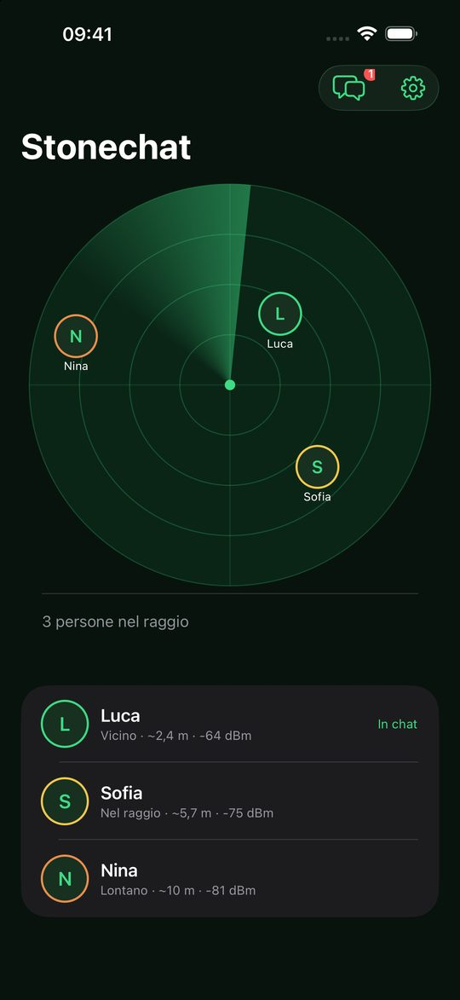
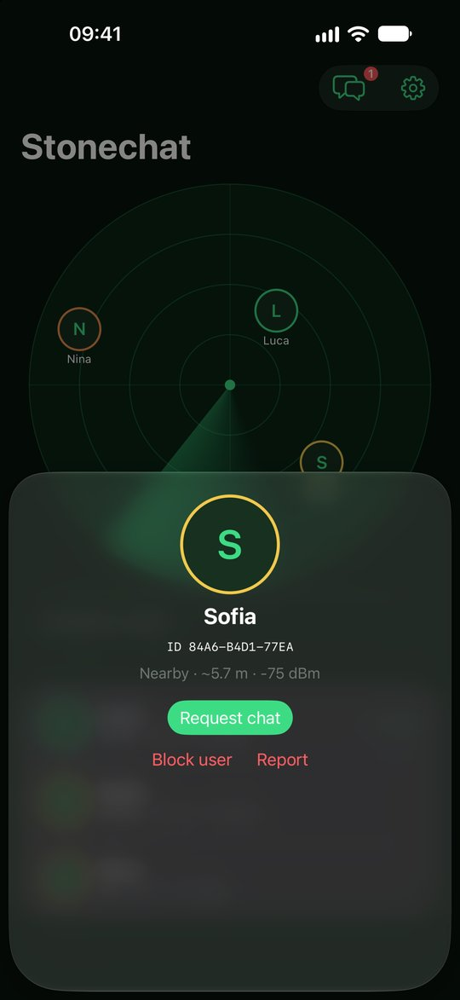
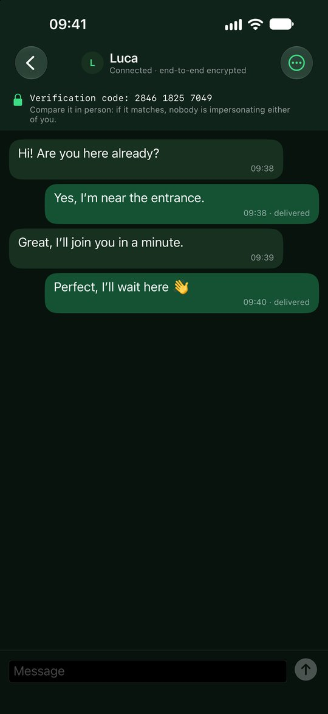
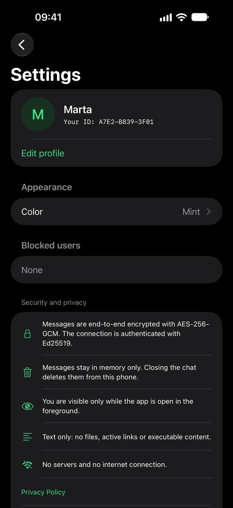

Stonechat
StonechatOn the App Store · Proximity chat over Bluetooth
Chat with people a stone’s throw away
Stonechat shows you who is nearby and lets you chat directly from phone to phone. No internet, no servers, no accounts.
Download on the App Store How it works
- On the App Store
- Free
- No ads
- English and Italian
- 18+

How it works
Three steps, no sign-up
No email, phone number or password. Just keep the app open with Bluetooth on.
Open Stonechat
Pick a name and, if you like, a picture. Nearby people who have the app open appear on the radar.
Ask to chat
Tap a profile and send a request. The chat starts only if the other person accepts.
Write
Messages travel encrypted directly between the two phones. When you close the chat they are deleted.

Consent
Nobody can message you without your yes
Every conversation starts with a request. The other side decides.
- Accept, decline or block whoever wants to chat.
- After you decline, further requests from the same person are rejected automatically for about two minutes.
- People you block can no longer see or contact you.

End-to-end encryption
Talk only to the person in front of you
Messages travel directly from one phone to the other, encrypted with X25519, AES-256-GCM and Ed25519 signatures.
- A verification code at the top of the chat: compare it in person to be sure nobody is impersonating either of you.
- Messages stay in the app’s memory and are never saved to disk.
- Closing the chat deletes them from your phone, and the other phone receives a request to delete them too.

You are in control
Your call, always
Every choice is one tap away.
- Pause or close a chat, block or report a profile at any time.
- Four color palettes: Mint, Blue, Violet and Coral.
- Erase everything in one tap: profile, keys, chats and block list.
Privacy by design
What we don’t collect can’t end up anywhere
Stonechat is built to work without knowing anything about you.
No account
Your profile exists only on your phone. No email, no phone number, no password.
No servers
Conversations travel over Bluetooth from phone to phone. There is no archive anywhere.
End-to-end encrypted
Only the two phones in the conversation can read the messages.
Visible only when you want
You appear on the radar only while Stonechat is open in the foreground. Close the app and you disappear.
No ads
No tracking and no usage analytics. We don’t use GPS or your location.
Text only
No files, no active links, no executable content. Invisible characters are removed.
Where to use it
Anywhere someone is a few steps away
Talk to the people around you without swapping phone numbers or social profiles. It even works where your phone has no signal.
- Events and concerts
- Fairs and conferences
- Campuses
- Trains and travel
- Places with no signal
Why “Stonechat”
The stonechat is a small bird whose call sounds like two stones being tapped together. And a stone’s throw away means exactly that: just a few steps from you.
FAQ
Before you start
Do I need an internet connection?
No. Stonechat uses Bluetooth only, so it works even where there is no signal. Both people need the app open and Bluetooth turned on.
How close does the other person need to be?
Within Bluetooth range, which depends on the phones and the surroundings: walls and crowds reduce it. The distance shown on the radar is approximate.
Who can see me?
Only people with Stonechat open near you, and only while you also have the app open in the foreground. They see the name and picture you chose, not your phone number or location. People you have blocked can’t see you.
Are messages saved?
No. They stay in the app’s memory while the chat is open and are never saved to disk or sent to a server.
How much does it cost?
Nothing. Stonechat is free, with no ads and no in-app purchases.
Where can I download it?
Stonechat is free on the App Store for iPhone with iOS 17 or later.
Which languages does the app support?
English and Italian. Stonechat follows your iPhone’s language; to choose another one, go to iOS Settings → Apps → Stonechat → Language (on iOS 17: Settings → Stonechat → Language).
Need help?
Our support page answers the most common questions. For help, reports or privacy requests, email jtengineeringsupport@gmail.com.
Available on the App Store
Get Stonechat
Free, no ads and no in-app purchases. For iPhone with iOS 17 or later, in English and Italian.